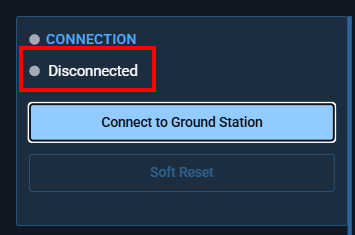
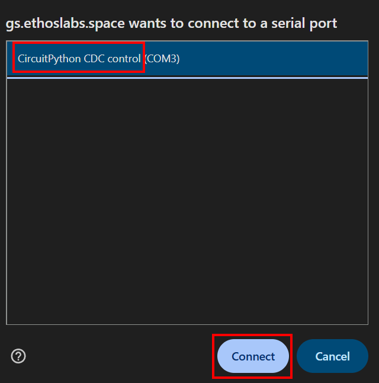
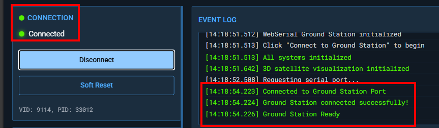
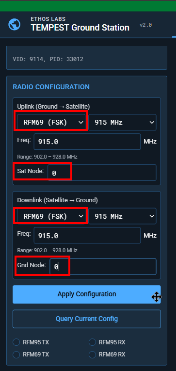
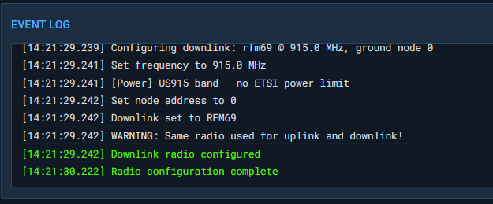
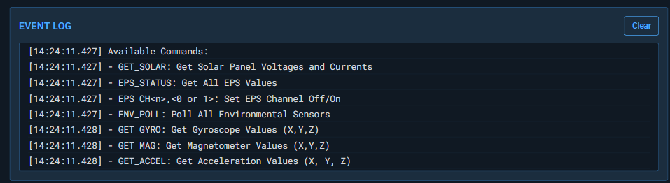

WebSerial Interface
Connecting to the Ground Station
Step 1: Open the Interface
Navigate to the ground station URL in Chrome or Edge. The interface loads with all controls disabled until a serial connection is established.

Step 2: Connect
- Click "Connect to Ground Station"
- A browser dialog appears listing available serial ports
- Select the GS Pico MCU USB port

- The connection establishes with default serial parameters:
| Parameter | Default |
|---|---|
| Baud Rate | 115200 |
| Data Bits | 8 |
| Stop Bits | 1 |
| Parity | None |
| Flow Control | None |
Upon successful connection:
- The status indicator turns green
- GSB Serial monitor shows "On" with a green status symbol
- Command input and buttons become enabled
- The event log shows "Connected to serial port"

Step 3: Configure Radios (if needed)
The Radio Configuration panel lets you set uplink and downlink parameters independently:
- Radio Type: RFM95 (LoRa) or RFM69 (FSK)
- Band: 433 MHz, 868 MHz, or 915 MHz
- Frequency: Specific frequency within the selected band
- Node Address: Satellite node (uplink) / Ground node (downlink)
Click "Apply Configuration" to send configuration commands to the GS Pico MCU.


Sending Commands
Text Input
Type any command in the command input field and press Enter or click "Send Command". The command is sent to the GS Pico MCU which forwards it via radio.
Quick Commands
Preset buttons send common commands with a single click:
| Button | Command |
|---|---|
| Solar | GET_SOLAR |
| EPS | EPS_STATUS |
| Gyro | GET_GYRO |
| Orient | GET_ORIENTATION |
| BME | GET_BME |
| Accel | GET_ACCEL |
| Mag | GET_MAG |
| Temp | GET_TEMP |
| Disk | OBC_DISK |
| RAM | OBC_RAM |
| Proc | OBC_PROCESSES |
| Host | GET_HOSTNAME |
| WiFi | WIFI_INFO |
All Commands Reference
Click "All Commands" to display the full command list in the event log. See Command Protocol detailed documentation.
{kind=link}

Event Log
The event log (terminal) displays all communication with timestamps:
| Message Type | Color | Description |
|---|---|---|
info |
Default | System messages, help text |
command |
Accent | Commands sent to satellite |
response |
Green | Telemetry data received |
warning |
Yellow | Validation warnings, missing packets |
error |
Red | Connection errors, parse failures |
Click "Clear" to reset the event log.
Live Telemetry
The telemetry panel updates automatically when packets are received. It's organized into three sections:
Onboard Computer
| Field | Source | Updated By |
|---|---|---|
| CPU | OBCC or BECN |
OBC_CPU command or beacon |
| RAM | OBCR or BECN |
OBC_RAM command or beacon |
| Disk | OBCD or BECN |
OBC_DISK command or beacon |
| Temp | BME2, TEMP, or BECN |
GET_BME, GET_TEMP, or beacon |
Power System
| Field | Source |
|---|---|
| Battery | EPSS battery voltage |
| EPS Status | EPSS error code (OK or E{code}) |
| Ch 1–4 | EPSS channel states (ON/OFF) |
Solar Panels
| Field | Source |
|---|---|
| X-, X+, Y-, Y+ | SOLR voltage and current per panel |
| Total Power | Calculated: sum of (V × I / 1000) for all panels |

Satellite Orientation (3D)
The orientation panel shows a Three.js 3D model of the satellite that updates when ADCS or GET_ORIENTATION data is received.
- Roll (X): Rotation around the forward axis
- Pitch (Y): Rotation around the lateral axis
- Yaw (Z): Rotation around the vertical axis (heading)
Click "Update" to request fresh orientation data.
The 3D model shows:
- Colored cube body (RGB faces for axis identification)
- Solar panels on the X-axis sides
- Antenna on the Y+ axis
- X/Y/Z axis indicators and grid

Classification Banners
Classification banners appear at the top and bottom of the interface. Change the classification level in the Configure tab:
| Level | Banner Color |
|---|---|
| UNCLASSIFIED | Green |
| CUI | Purple |
| SECRET | Red |
| TOP SECRET | Orange/Yellow |
| TOP SECRET//SCI | Orange/Yellow |

Soft Reset
The "Soft Reset" button sends CTRL-C followed by CTRL-D to the GS Pico MCU, which can reset the serial connection without a full disconnect/reconnect cycle.